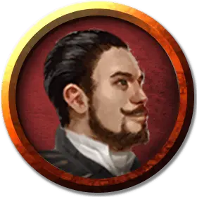

Оронд Гролхунд
Orond Gralhund
Средний Гуманоид (Человек), нейтрально-злой, именной НИП

Класс Доспеха 15 (кираса)
Хиты 9 (2к8)
Скорость 30 футов
| мод | спас | ||
|---|---|---|---|
| СИЛ | 11 | +0 | +0 |
| ЛОВ | 12 | +1 | +1 |
| ТЕЛ | 11 | +0 | +0 |
| мод | спас | ||
|---|---|---|---|
| ИНТ | 9 | −1 | −1 |
| МДР | 14 | +2 | +2 |
| ХАР | 16 | +3 | +3 |
Навыки Обман +5, Проницательность +4, Убеждение +5
Чувства пассивное Восприятие 12
Языки Общий
Опасность 1/8 (25 опыта)
Бонус мастерства +2
Действия
Рапира. Рукопашная атака оружием: +3 к попаданию, досягаемость 5 футов, одна цель. Попадание: Колющий урон 5 (1к8 + 1).
Реакции
Парирование. Дворянин добавляет 2 к КД против одной рукопашной атаки, которая должна попасть по нему. Для этого дворянин должен видеть атакующего, и должен использовать рукопашное оружие.
Описание
Благородный род Гролхундов прославился торговлей оружием и наёмничеством. Их семейный девиз — «Видим обе стороны». Оронд — патриарх семьи, но он туго дум, не очень культурен и в душе понимает это. В том, чтобы строить планы и заводить связи, он полагается на любимую жену Ялу.
Когда несколько лет назад ряд Лордов в масках был убит, лорд Гролхунд рассчитывал, что место одного из них займёт его супруга. Но этого не случилось, несмотря на все посулы и взятки. После такого разочарования Оронд безумно озлобился, да так и не оправился с тех пор.
Менее года назад с Гролхундами связались агенты Жентарим на службе Маншуна и заключили с ними союз. Род Гролхундов предоставил Жентарим деньги и укрытие на семейной вилле. В обмен семейство получает всё, что может предложить Чёрная Сеть, в том числе сведения, собранные её шпионами. Так что Жентарим использует Гролхундов как щит, а Гролхунды используют Жентарим, чтобы выяснить личности и слабости Лордов в масках.
Оронд не вполне осознаёт, что его семья так сильно переплелась с Чёрной Сетью, что их уже невозможно отделить. В Глубоководье уже не секрет, что Гролхунды связаны с этой организацией. Но мало кто знает, что Жентарим в доме Гролхундов — агенты Маншуна.
Ни Оронд, ни члены его семьи ничего не знают о клоне волшебника. Оронд с супругой считают, что на их вилле живут вожаки местной ячейки Чёрной Сети, а главный у них—Урстул Флоксин.
Оронд — невысокий коренастый мужчина, который хорошо одевается и приятно выглядит. Однако стоит ему открыть рот, и очарование исчезает — становятся видны его грубая натура, раздутое самодовольство, обидчивость и нестерпимое презрение к «черни». Когда рядом нет жены, он начинает без конца хвастаться и закатывать истерики. Когда приходится говорить с незнакомцами, он старается держать под рукой своего телохранителя Храббоза, опасаясь, что его могут атаковать и ограбить в любую минуту. Когда же Яла рядом, Оронд становится совершенно иным: тихим, почти что робким — и остаётся в тени супруги.
Связи с Жентарим Оронд полностью оставляет на Ялу.
Целыми днями он следит за тренировками наёмников. оплачивает счета и ворчит о том, как дорого вести дела в этом городе. Хотя Оронд — человек, родился он с хвостиком как у тифлинга. Хвостик ампутировали в детстве, но шрам сзади остался.